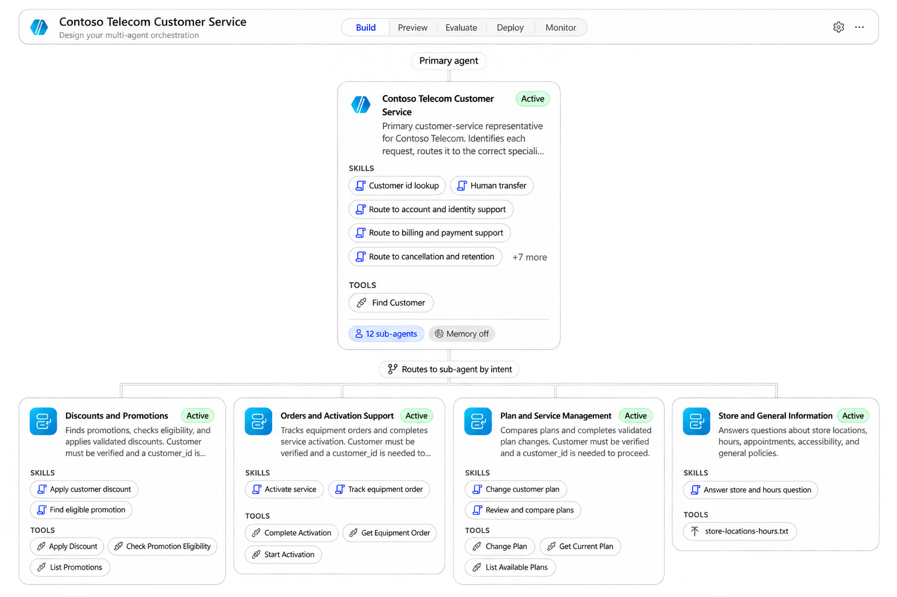
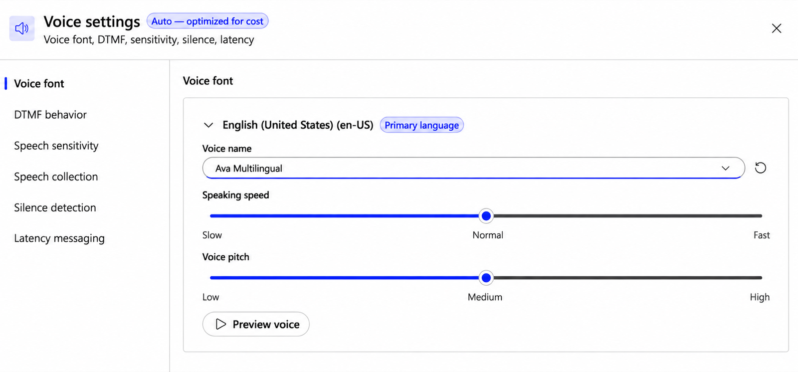
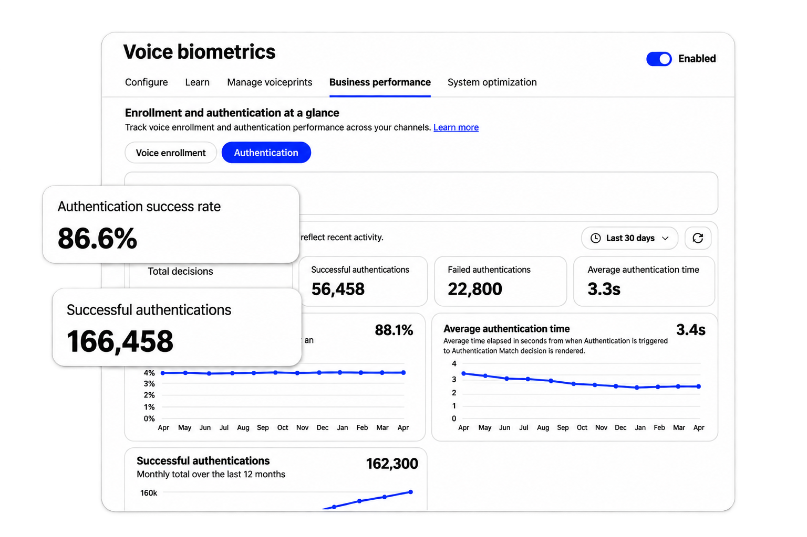
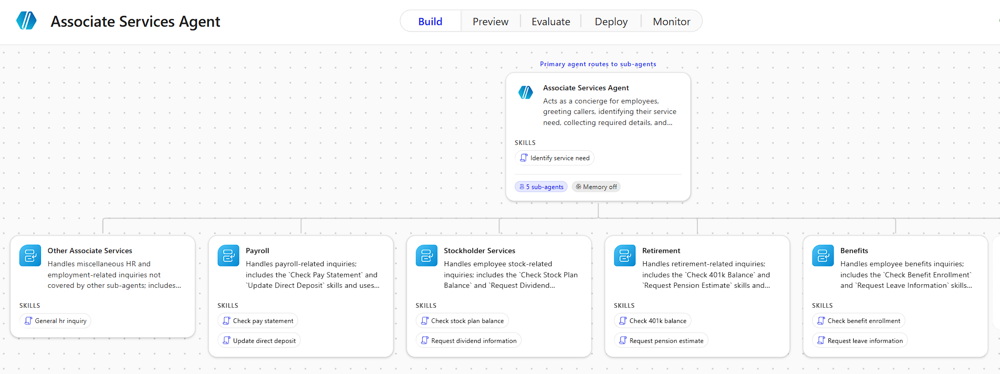

原生语音管道与精细声学调优
语音不再是文字机器人的事后补丁：内置全新 Harper 多语种音色（同一智能体可按英语、意大利语、越南语分别指定专属音色、语速与音高），并开放按键双音多频行为、语音灵敏度、静默等待阈值与高延迟安抚话术配置，支持直接在工作台申领并绑定 Teams Phone 号码 [1][2]。
Gartner 2025 调研预测，到 2028 年至少 70% 的客户服务旅程将从对话式人工智能起步 [1][2]。在 Ignite 2026 专场 BRK379 中，微软副总裁 Omar Aftab、首席产品经理 Jason Xian 与全美最大员工持股连锁超市 Publix 资深信息技术经理 Chris Povolish 联合发布了正式商用的 Customer Conversation Harness 与 Microsoft Contact Center Intelligence（CCI）：一次编写即可跨越网页聊天、移动消息与 Teams Phone 语音运行，约 3.3 秒完成防合成欺诈的声纹核验，并在 7.5 分钟实机演示中零改造接入存量联络中心 [1][2][3]。
01 / Dedicated Customer Harness
习惯每天与前沿推理模型自然交谈的消费者，已无法容忍传统电话按键导航（“存款请按 1，预约请按 2”）和换个渠道就丢失前文的网页机器人 [1]。Gartner 在 2025 年《人工智能代理与交互式语音应答性能》报告中指出，到 2028 年至少 70% 的客户旅程将以对话式人工智能作为第一触点 [2]。微软为此在 Copilot Studio 内推出正式商用的 Customer Conversation Harness，将过往割裂的电话语音树、网页富媒体聊天与后台业务智能体收拢进同一套工程底座 [1][4]。
与单打独斗的早期问答机器人不同，新底座复刻了真实联络中心的专家分工模式：主控接待智能体负责识别来电意图与维护全局记忆，再按需分发给信用卡、支票账户、按揭贷款或外部 Microsoft Foundry 专职子智能体 [1][2]。会话上下文直接绑定在经过身份认证的客户智能体层而非单一通信管道——即便客户驾车穿过隧道导致电话掉线，重新拨入后对话也能直接从中断处续接，无需从头自报家门 [1]。下方交互点播台集成了 BRK379 官方 45 分钟录播流、原版课件直链与三段核心实录时间轴，点击即可直接在页内加载视频或按章节检索 [1][2]：
支持在页面内直接挂载微软 Medius 官方播放器，按架构主旨、7.5 分钟实机改造与 Publix 客户案例分段查阅精确时间戳。
02 / Voice-Native & Hybrid Reasoning
在外部客服场景中，纯大模型自由发挥与纯流程图死板跳转各有致命短板：推荐信用卡权益时需要模型灵活追问偏好，而涉及法律合规告知或提交开卡申请时则要求一步不差地执行标准话术 [1][2]。Customer Conversation Harness 允许创作者在同一个子智能体内混编生成式技能（Generative Skills）与确定性话题（Deterministic Topics），并通过画布级变量双向传值——生成式对话收集到的客户偏好可直接注入确定性审批流，确定性节点查出的客户档案也能动态拼入生成式指令 [1][2]。
语音不再是文字机器人的事后补丁：内置全新 Harper 多语种音色（同一智能体可按英语、意大利语、越南语分别指定专属音色、语速与音高），并开放按键双音多频行为、语音灵敏度、静默等待阈值与高延迟安抚话术配置，支持直接在工作台申领并绑定 Teams Phone 号码 [1][2]。
支持按子智能体职责独立选配模型：深度账务推理挂载高算力大模型，高频常规问答挂载微软内部实验室专为实时客服精调的处理器级第三方小语言模型（压低响应延迟与词元开销，并提升高并发可用性），同时即将上线击败多项联络中心行业基准的首款端到端语音大模型 Microsoft AI Realtime 1 [1][2]。
彻底告别“报生日、核对账单地址”的繁琐盘问，原生集成的声纹生物识别可在自然寒暄中比对来电号码与声纹特征；官方 30 天业务看板显示认证成功率达 86.6%（56,458 次成功 / 22,800 次拦截，近 12 个月月度成功核验达 162,300 次），平均核验仅需 3.3 秒，并主动防御录音回放、深度伪造与合成语音攻击 [1][2][3]。
下方三幅提取自 BRK379 官方原版幻灯片的高清界面实拍，完整呈现了单画布多智能体编排视图、成本优先语音参数抽屉以及声纹生物识别 30 天生产监控面板 [2]：

主控客服代理统一执行客户身份查询与人工转接，按意图精准分发至促销折扣、设备激活、套餐变更与门店政策等独立子代理 [2]。

默认启用成本优化自动选模，支持在线试听多语种音色并精细调节按键行为、收音时长、静默追问与长耗时等待提示 [1][2]。

集中管理客户声纹库、业务通过率与系统阈值校准，支持人机及人人通话双向核验，从源头阻断录音回放与合成语音欺诈 [1][2][3]。
03 / 7.5-Min Live Demo & CCI
为验证“一次编写、全渠道发布”的真实工程效率，首席产品经理 Jason Xian 在舞台现场把一套只会机械重复“信用卡还款请按 1”的传统银行语音系统，用 7.5 分钟彻底重构为横跨网页与电话的多智能体系统，并当场接入真实 Avaya 坐席桌面 [1]。
输入一句自然语言指令自动创建支票、信用卡与按揭三个子智能体；为信用卡子代理上传宣传册文档作为知识源，编写询问年费与出行偏好的生成式推荐技能（精准匹配 $495 年费含机场贵宾厅与 $300 旅行抵扣金的 Contoso Horizon Reserve 卡），同时挂载按渠道自适应的确定性开卡话题（网页端弹出交互式卡片，电话端校验声纹通过后直接调取档案提交并在 24 小时内发信确认）[1]。
在支票账户子代理中直接复用其他底座已建好的余额查询工作流，并输入名称一键挂载同环境下的 Azure AI Foundry 交易分析智能体；当实测发现账户余额仅剩 $68 时，由外部交易代理自动穿透账单明细，定位出 $325 初始余额之外的 $5,000 玩偶投资扣款与两笔合计 $493（$168 与 $325）的咖啡消费 [1]。
通过同周正式商用的 Microsoft Contact Center Intelligence（CCI） 门户生成连接端点并粘贴至 Avaya 控制台，无需编写软件开发工具包代码或改动任何既有电话号码、呼叫队列与路由规则（同样原生兼容 Dynamics 365、Genesys、Five9，无专业联络中心的企业也可一键转接至 Teams 聊天、频道或电话队列）[1][3]。在真实拨测中，故意挂断电话模拟信号中断再重拨，系统先通过声纹确认身份，随即自动唤醒记忆接着上一通的贵宾厅偏好继续推荐，并支持中途切换意大利语问答 [1]。
当副总裁 Omar Aftab 拿走 Jason 的手机拨打同一号码谎称本人要求向外部转账时，声纹核验当场判定不匹配并平滑转接至 Avaya 真人坐席（右侧同步呈现实况通话转录与核验失败记录），而未转人工的自助结案通话则由 CCI 后台智能体自动按客户流失风险等指标打分 [1][3]。底层由 Microsoft IQ（整合办公政策文档、精编产品手册与实时订单理赔业务库）供给统一企业语境，且每个新建客服代理在发布前即自动登记至 Agent 365 目录，完整暴露所有者、身份标识、连接器权限与防数据泄漏策略 [1][2]。
04 / Customer Spotlight: Publix
创立于 1930 年佛罗里达州温特黑文的 Publix Super Markets 是全美最大的员工持股企业及前十大高销量连锁超市（位列《财富》美国 500 强第 72 位），在美东南拥有 1,453 家门店、超 260,000 名员工，2025 年零售额达 627 亿美元 [1][2]。支撑庞大门店网络、药房与地产业务的背后，是 34 座联络中心与约 800 名客服专员，每月需处理超过 200,000 通呼入与呼出电话 [1][2]。Publix 资深信息技术经理 Chris Povolish 在现场完整复盘了团队从旧版声明式语音机器人迈向实时多智能体底座的真实踩坑与架构升级 [1][2]。
已在技术支持联络中心全面落地：能识别来电门店身份、播报已知的门店级重大故障并自动建单发券以抵御呼入洪峰，还能纠偏拨错中心的来电 [1][2]。但受限于旧版声明式语音框架，意图覆盖窄、播报冗长、响应偏慢；一旦员工中途插话打断或临时更换话题，对话就会卡死在错误分支中 [1][2]。
面向全公司 26 万余名员工构建统一实时语音与聊天助手 Sage（定于 2026 年 12 月 9 日正式投产），单画布统筹薪资管理、股东服务、退休金、员工福利与通用人事五大专职子智能体，对接 Dynamics 联络中心携带完整对话前文转接人工 [1][2]。通过共享技能仅按需向模型发送当前动作指令以大幅节省上下文窗口，配合双态共享变量、实时语音工具调用透明活动图及知识更新后的自动化评测集，实现病假请假与带薪休假指引的自然多轮对话 [1][2]。

主控接待代理识别员工诉求并收集必要字段后，精准路由至薪资单与直接存款、员工持股分红、401k 与养老金测算、福利休假登记等子智能体；现场播放的真实通话录音中，生病沙哑的员工一句话同时咨询当日缺勤与次日续假，Sage 即时给出联系值班经理与登录 Passport 提交带薪病假的清晰指引 [1][2]。
| 架构选型与落地维度 | 适用能力组合 | 生产环境工程准则（源自 BRK379 实证） |
|---|---|---|
| 业务话术与流程控制 | 生成式技能 + 确定性话题混编 | 开放式选品问答交由生成式技能动态追问；涉及合规确认、开户提单或故障排查标准步骤时切入确定性话题，用共享变量无损衔接 [1][2] |
| 电话身份核验与防伪 | 原生声纹识别 + 会话级记忆门控 | 结合来电号码与 3.3 秒声纹核验阻断合成语音与录音回放；仅在身份核验通过后解锁跨通对话记忆与账户敏感操作，未通过者自动转接人工坐席 [1][3] |
| 存量联络中心升级路径 | CCI 端点直连 / Teams 队列兜底 | 已部署 Avaya、Genesys、Five9 或 Dynamics 的企业直接配置 CCI 端点保留原有号码与坐席桌面；中小型业务直接申领 Teams 号码并转交内部员工队列 [1][3] |
| 上下文降本与质量守护 | 跨代理共享技能 + 自动化评测集 | 将通用规范沉淀为共享技能按需加载以压缩提示词窗口；每次更新业务知识库后强制重跑自动评测集，并开启 Agent 365 统一权限审计 [1][2] |
05 / References: Official Primary Sources & Engineering Guides